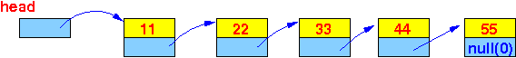
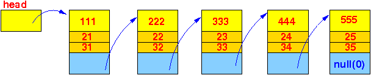

- I will now show you
assembler program example on
how to access
linked list elements
I will assume that a linked list has already been initialized and has multiple (enough) list elements
I will show you the list access techniques using 2 different linked list - because depending on the structure of the List class, the offsets are "computed" differently.
- The first example uses
List objects
of the following
structure:
// File: /home/cs255001/demo/asm/4-linked-list/List.java public class List { int value; // int typed variable takes up 4 bytes List next; // reference variable contains an address, also 4 bytes // instance methods omitted - not relevant for discussion }The placement of the data fields value and next in a list element is as follows:

Therefore, the offsets to access the fields are "computed" as follows:
address(value field) = base address(list element) + 0 address(next field) = base address(list element) + 4
- The program uses the following linked list
that starts at the head
variable:
 This is how you move (= access) the fields in the list elements in ARM assembler:
main: // We need to get the start of the list stored in the variable "head" // 1. Get the address of the variable "head" movw r0, #:lower16:head movt r0, #:upper16:head // r0 = addr(head) // 2. Get the value stored in the variable "head" ldr r0, [r0] // r0 = addr(first list elem) // r0 now has the base address of // the first list element ! ldr r1, [r0,#0] // r1 = head.value // Note: you can also use "ldr r1, [r0]" ldr r0, [r0,#4] // r0 = head.next = addr(2nd list elem) !!! // r0 now has the base address of // the 2nd list element ! ldr r2, [r0,#0] // r2 = head.next.value !! ldr r0, [r0,#4] // r0 = addr(3rd list elem) !!! // r0 now has the base address of // the 3rd list element ! ldr r3, [r0,#0] // r3 = head.next.next.value !! ldr r0, [r0,#4] // r0 = addr(4th list elem) !!! // r0 now has the base address of // the 4th list element ! ldr r4, [r0,#0] // r4 = head.next.next.next.value !! // And so on...The comments in the code should be sufficient for you to follow - even if you don't attend the lecture. (I know my lecture notes are so extensive that many students just study them and don't attend my lectures).
But if you don't follow the code above, make sure you attend the lecture on this topic, because I will show you in class what is going on in the program using EGTAPI.
Using EGTAPI, you can see the address in the register r0 going through the linked list elements one at a time.
- Example Program:
(Demo above code)

- Prog file: /home/cs255001/demo/asm/4-linked-list/list1.s
How to run the program:
- To compile: as255 list1
- To run: use EGTAPI
- The second example uses
List objects
of the following
structure:
public class List { int value1; // int typed variable takes up 4 bytes short value2; // short typed variable takes up 2 bytes short value3; // short typed variable takes up 2 bytes List next; // reference variable contains an address, also 4 bytes // instance methods omitted - not relevant for discussion }The placement of the data fields value1 value2 value3 and next in a list element is as follows:

Therefore, the offsets to access the fields are "computed" as follows:
address(value1 field) = base address(list element) + 0 address(value2 field) = base address(list element) + 4 address(value3 field) = base address(list element) + 6 (= 4+2) address(next field) = base address(list element) + 8 (= 4+2+2)
Warning:
- The fields
value2 and value3 are
short typed
Therefore, we must use the instruction ldrsh to access these fields !!!
- The fields
value2 and value3 are
short typed
- The program uses the following linked list
that starts at the head
variable:
 This is how you move (= access) the fields in the list elements in ARM assembler:
main: movw r0, #:lower16:head movt r0, #:upper16:head // r0 = addr(head) ldr r0, [r0] // r0 = head.next = addr(1st list elem) ldr r1, [r0,#0] // r1 = head.value1 ldrsh r2, [r0,#4] // r2 = head.value2 ldrsh r3, [r0,#6] // r3 = head.value3 ldr r0, [r0,#8] // r0 = head.next = addr(2nd list elem) !!! ldr r4, [r0,#0] // r4 = head.next.value1 ldrsh r5, [r0,#4] // r5 = head.next.value2 ldrsh r6, [r0,#6] // r6 = head.next.value3 ldr r0, [r0,#8] // r0 = head.next.next = addr(3rd list elem) !!! ldr r7, [r0,#0] // r7 = head.next.next.value1 ldrsh r8, [r0,#4] // r8 = head.next.next.value2 ldrsh r9, [r0,#6] // r9 = head.next.next.value3The technique is the same as in example 1:
- Use base address (of the list element)
+ the appropriate offset to
access a specific
data field in the
list element
- Also:
- Use the appropriate
load instruction depending of the
data type of the
field in the
list element that you are
accessing !!!
(The data field is a simple variable, so you must apply what you have learned on accessing simple variable !!!
If you don't know what I am talking about in the last sentence, read this webpage: click here)
- Use the appropriate
load instruction depending of the
data type of the
field in the
list element that you are
accessing !!!
- Use base address (of the list element)
+ the appropriate offset to
access a specific
data field in the
list element
- Example Program:
(Demo above code)
- Prog file: /home/cs255001/demo/asm/4-linked-list/list2.s
How to run the program:
- To compile: as255 list2
- To run: use EGTAPI
- Translate the following
statement into
ARM assembler:
head.next.value2 = 999;
Solution:
// Get the RHS first mov r0, #999 // r0 = 999 // Store r0 into LHS movw r1, #:lower16:head movt r1, #:upper16:head // r0 = addr(head) ldr r1, [r1] // r0 = head ldr r1, [r1, #8] // r0 = head.next strh r0, [r1, #4] // head.next.value2 = r0 = 999
- Example Program:
(Demo above code)
- Prog file: /home/cs255001/demo/asm/4-linked-list/list2a.s
- Translate the following
statement into
ARM assembler:
head.value1 = head.next.next.value3;
Solution:
// Get the RHS first movw r0, #:lower16:head movt r0, #:upper16:head // r0 = addr(head) ldr r0, [r0] // r0 = head ldr r0, [r0, #8] // r0 = head.next ldr r0, [r0, #8] // r0 = head.next.next ldrsh r0, [r0, #6] // r0 = head.next.next.value3 // Store r0 into LHS movw r1, #:lower16:head movt r1, #:upper16:head // r0 = addr(head) ldr r1, [r1] // r0 = head str r0, [r1, #0] // head.value1 = r0 // = head.next.next.value3
- Example Program:
(Demo above code)
- Prog file: /home/cs255001/demo/asm/4-linked-list/list2b.s